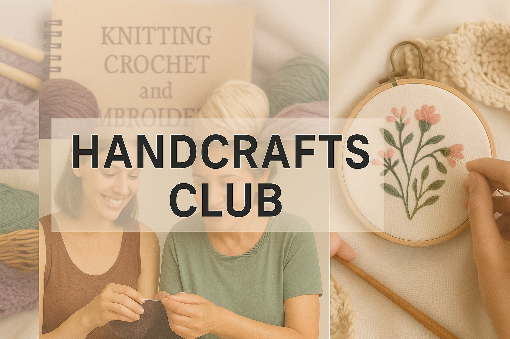
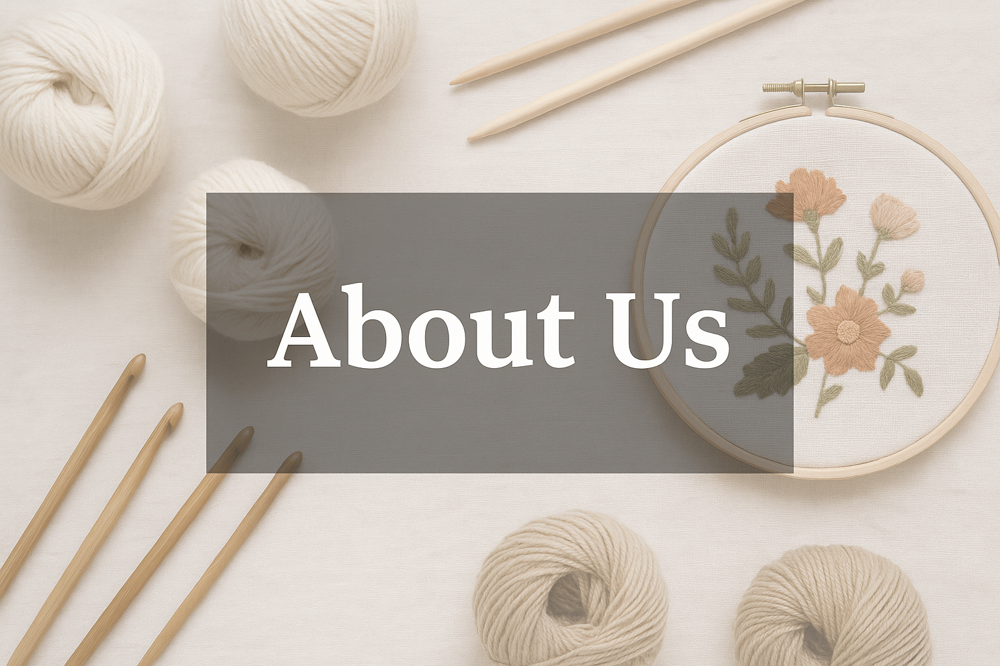
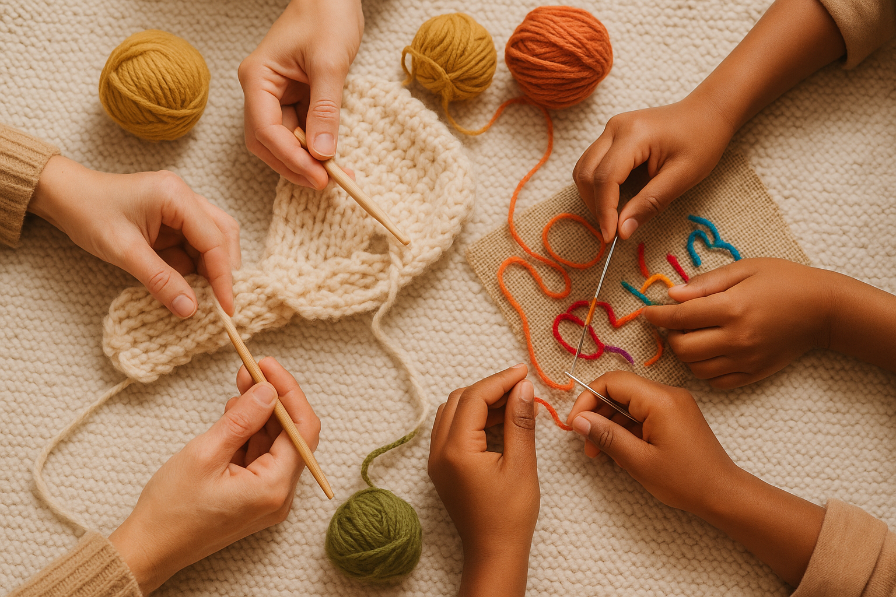

Reflective Design.
The focus of this section of the Style Guide is ensuring the user has a good first impression of the site.
Every design decision aligns with deeper goals.
Show diverse groups interacting positively
AnnotationBelonging is a core value for the client’s mission to reduce social isolation through shared creative practice. Showing images of diverse groups engaging in handcrafts such as knitting, crochet, and embroidery helps create a sense of community and emotional connection. Users are more likely to feel represented and included when they see people like themselves participating together.
Home page Hero image with images of people engaging in handcrafts together or showcasing finished works and tools
AnnotationImagery will show people do the activity with other people. The focus is on interaction, not just diversity in appearancebut on meaningful interaction, creativity, and shared accomplishment through handcrafts.
Use inclusive language and visuals that reflect all ages, genders, backgrounds, and abilities
AnnotationInclusiveness is essential to ensure that users feel welcome and respected. By using neutral and semi-formal language, and showing people from diverse backgrounds participating in shared handcraft activities. This supports the client’s goal of building an inclusive, community-centered space.
Using Welcome message, Hero and gallery images showing diverse individuals engaging in handcrafts together and Language toggle feature to allow users to switch between different languages.
AnnotationImagery and text will highlight people of various ages, gender identities, cultures, and abilities working creatively together. The focus is not only on visible diversity but also on meaningful inclusion. A language toggle feature increases accessibility for non-English speakers, helping them feel confident and included while navigating the site.
Encourage users to showcase their personal craft creations and celebrate individual expression
AnnotationPromoting unique activities offer users a platform to express themselves through their handmade works by allowing them to upload photos of their crochet, embroidery, or knitting projects. To builds a sense of community pride and mutual inspiration. This reflects the client's goal of celebrating creativity and cultural contribution through shared craft practices.
“Gallery Submissions” button that allows users to upload craft images, which are then displayed in a community gallery section
AnnotationThe design includes an interactive submission feature where users can upload images of their handmade works. These are displayed in a dynamic gallery to showcase the uniqueness of each user’s contribution. This is not only promotes creativity but also fosters recognition and appreciation within the community.
Provide spaces where users can exchange ideas, access learning materials, and collaborate through shared knowledge and contribute knowledge from internal and external sources
AnnotationThis value helps build a collaborative learning space. Along with tutorials and content made for the site, users can also share helpful links like videos, blog posts, or tips from other platforms. This brings in different perspectives and makes the community more open, interactive, and connected across multiple sources of knowledge.
Comment section under gallery submissions, Discussion threads for asking and answering craft questions, Dedicated tutorial section with internal e-learning content, Option for users to embed or link external tutorials such as YouTube, blog and Instagram.
AnnotationThe tutorial section offers a range of formats, including videos, step-by-step instructions, and content shared by users. People can upload their own guides or share links to tutorials from other platforms, making it easier to exchange skills. This helps the site grow as a space for learning together and becomes a go-to place for sharing handcraft knowledge.
Let users view activities that fit their schedule and save them directly to their personal calendar
AnnotationBeing flexible means giving users the freedom to engage when it works best for them. With a calendar that shows upcoming events, users can easily find activities that match their availability. A “Subscribe” button lets them save events to their mobile calendar, which helps them stay organised and more likely to join in.
Interactive calendar with month filters and a Subscribe button to add events to their devices Calendar
AnnotationThe calendar layout makes it simple for users to explore workshops or community events at a glance. The ability to save events directly to their phones gives them more control and keeps everything in one place. It’s a small feature that adds a lot of convenience.
Give users tools to take initiative, lead community activities, and share ideas that matter to them
AnnotationEmpowering users means helping them feel like active contributors, not just visitors. The site supports this by offering ways for people to propose their own events, give feedback to the community, and request support when needed. Tools show users that their ideas are important and that they have a role in shaping the community.
Host an Event form where users can propose or organise community activities, Community Feedback form to share ideas or improvements, Contact Us form for local support or needs.
AnnotationThese features give users the chance to lead, connect, and collaborate. Whether it’s creating an event or suggesting a new idea, users feel seen and supported. It builds trust and a stronger sense of shared ownership in the platform.
Imagery and Tone of handcrafts hub including knitting, crochet and embroidery
This handcrafts website reflects an identity of warmth, creativity, and community much like the feeling of soft yarn woven into something meaningful. It brings people together through care, craft, and shared experiences. Images of people knitting and crafting together help express a cozy, welcoming atmosphere , gentle and familiar, like the yarn itself. These visuals evoke a sense of family, where everyone is invited regardless of age, gender, or background. There are no dividing lines , only open hands ready to teach, learn, and connect. The site aims to help users feel like they belong, to inspire them, and to show that their creativity matters. Through showcasing crafts like knitting, crochet, and embroidery and encouraging user participation in shared projects.
The emotional tone of the website is gentle, friendly, and inclusive. It will invite users to slow down, feel safe, and take pride in what they create. The language is soft and not overly formal(semi-formal) to make them feel like they’re entering a shared creative space rather than a platform. Users who are beginners or experienced makers, the tone is designed to be welcoming and respectful. Every part of the site from words to images will make people feel valued and inspired such as "Share your craft", “Join our circle” . These expressions are warm, open, and approachable

This hero image presents a soft horizontal collage of handcraft elements, knitting, embroidery, crochet, and people creating together. The composition reflects the values of warmth, inclusion, and creativity. The overall tone is welcoming and calm, supporting the website’s mission to reduce social isolation through creative connection.

This image express a clean, flat-lay arrangement of handcrafting tools, including knitting needles, crochet hooks, yarn balls, an embroidery hoop, vintage scissors, and stitch markers. The background is a soft, neutral fabric that creates a calm and focused visual tone. The image reflects the identity of the website: warm, inclusive, and creative, supporting the user’s understanding of the site’s purpose and values through both imagery and tone.

This image express a collaborative moment where multiple hands of different ages and skin tones are engaged in handcraft activities such as knitting and embroidery. The composition focuses on the hands only, avoiding identifiable facial features, which helps maintain privacy while emphasizing shared action and community values. The warm tones and natural textures of the yarn and background create a comforting atmosphere, a shared and meaningful experience.
Welcome to our creative handcraft community, a place where everyone is invited to share, learn, and grow. Whether you're passionate about crochet, knitting, or embroidery, you’ll find inspiration, support, and friendly connections here.
AnnotationThis welcome message uses warm, inclusive, and supportive language to establish the site’s friendly and collaborative tone. By inviting users of all skill levels and from diverse nationalities, and by highlighting shared creativity, the message supports the website’s intended identity: welcoming, community-focused, and inspiring.
Where the message usedThis message is intended to appear at the top of the homepage, introducing the site's purpose in a friendly tone.
Both imagery and language were chosen to work together to support the client's mission of creating a welcoming and creative handcraft community. The images show real, relatable moments like people crafting together which visually communicate collaboration and inclusiveness. The tone of the written content is friendly and supportive, using simple and positive language that makes users feel encouraged. When combined, these elements help building an emotional connection with users, which supports the vision of making the website feel like a shared, inspiring space for everyone.
Based on the principles and recommendations from the Australian Government Style Manual, ensuring that the tone, clarity, inclusivity, and accessibility of the website meet professional communication standards.
Referring to users of all ages
Inclusive Termeveryone, older people, younger people, they, we, users, member
To Promotes intergenerational inclusion and avoids ageist terms; welcomes everyone or crafters
Referring to users with varying abilities
Inclusive Termpeople of all abilities, everyone regardless of ability, people with diverse abilities, everyone
Acknowledges physical and cognitive differences respectfully
Gender-neutral expressions
Inclusive Termthey, everyone, makers, crafters
Avoids gender assumptions by supporting gender diversity and fosters a safe, welcoming environment
Inviting participation in craft activities
Inclusive Termjoin, let’s make, share your work, Get involved, Show what you made, Be part of the club, Explore handmade ideas, Share your creativity
Encouraging, collaborative tone that reflects the site's mission to build connection through creativity
User-friendly and accessible labels
Inclusive Termget started, learn together, submit your gallery
Plain, readable language that supports WCAG 3.1.1 and makes navigation and interaction easier for all users
Welcome to our creative handcraft community, a place where everyone is invited to share, learn, and grow. Whether you're passionate about crochet, knitting, or embroidery, you’ll find inspiration, support, and friendly connections here.
Revised TextWelcome to our creative handcraft community — a space where everyone, no matter their age, background, or skill level, is invited to connect, learn, and grow through making. Whether you're passionate about crochet, knitting, or embroidery, or just getting started, you'll find inspiration, encouragement, and a warm community here.
AnnotationThis revised welcome message uses more inclusive and accessible language to reflect the community focused values of the Handcrafts Club. The phrase “everyone, no matter their age, background, or skill level” replaces more general wording to actively recognize the diversity of users including older people. Vocabulary such as inspiration, encouragement, and warm community reinforces a sense of belonging and emotional safety. To support user needs; to feel welcomed, represented, and encouraged. Citing to WCAG 3.1.1, using plain, readable English that is easy to understand for all users.
Loading community content...
According to my page, there are only 3 issues examples. One is Focus indicator not visible on file input and the other two are Input fields, Full name box and Message box. Thus, I decided to group them together.
Choose file button
Issue identifiedElement location is choose file button. It may not show a visible focus indicator when navigated via keyboard.
WCAG Success Criteria2.4.7 Focus Visible level AA (IBM Rule: style_focus_visible).
Any keyboard operable user interface has a mode of operation where the keyboard focus indicator is visible.
Impact on usersPeople who rely on keyboard control,use a screen reader, including blind, low vision, and neurodivergent people. They may not know that the file input has received focus, causing confusion and accessibility barriers.
how this could be fixedWe can use CSS to enhance focus visibility. For example, adding border or outline that appears clearly when the input is focused. This ensures that users can clearly see which element is selected when navigating with the keyboard.
Full name box
Issue identifiedUsers may not understand what type of information they are expected to provide, such as whether it relates to personal details or something else."
WCAG Success Criteria1.3.1 Info and Relationships Level A (IBM Rule: input_fields_grouped)
Information, structure, and relationships conveyed through presentation can be programmatically determined or are available in text.
Impact on usersIt can cause confusion, incomplete submissions or make navigation harder to users who use a screen reader, including blind, low vision, and neurodivergent people and also people who rely on keyboard control.
how this could be fixedWrap all related inputs including Full Name, Email and Message in a semantic HTML like fieldset, and include a legend that describes the group. This helps users understand the purpose of each group.